Round 2: header mark and chapter navigation
These are mockups: the running site was restyled in the browser and photographed, so nothing here is built yet. Tell me a letter for the mark and a number for the navigation (or mix: “neighbours from 1, return control from 3”), and I will build that one properly. If none fits, a sentence about what bothers you is enough to aim the next round.
Done since round 1: the catalog typography you approved (D02) is being published; the movable-point work you approved (M03) has started with the cursor stage.
H05 Header mark
You said the green square is the problem, but the flower disappears without a backdrop. Each option below shows desktop, then phone. The tab icon and the phone home-screen icon are not touched by any of them.
Current
The square tile, for reference.
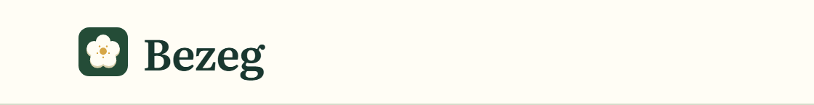

A. Round, dark green
Your suggestion: the same dark backdrop as a circle.
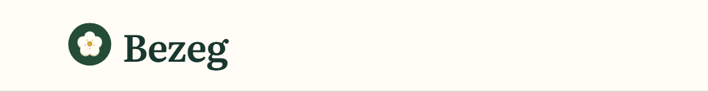
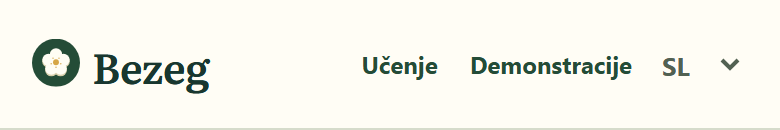
B. No backdrop, outlined flower
The flower alone, with a dark green outline so it stays visible on the cream header.
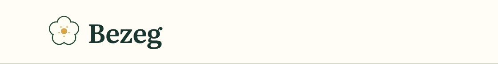
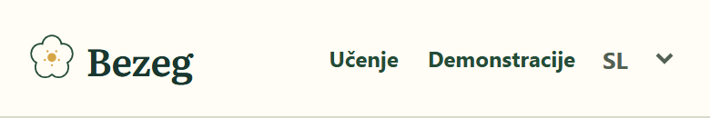
C. Round, pale green
A soft tint behind an outlined flower: a backdrop without the heavy block of colour.
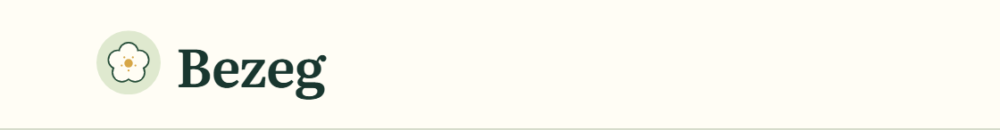
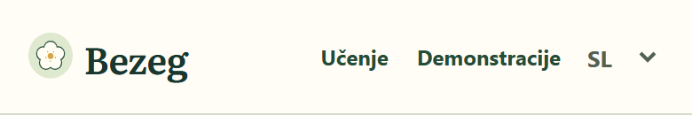
D. Ring
An outlined flower inside a thin dark ring, like a seal.
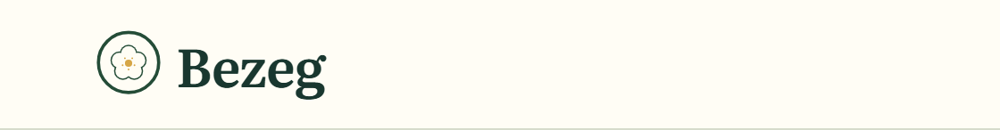
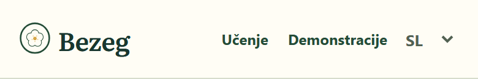
L02 L03 Chapter previous / next and “All learning content”
Three different directions rather than variations of the last one. In all of them the two controls stay where they are and the chapter titles keep their typography. Each shows the return control (desktop, phone) and then previous / next (desktop, phone).
Current
For reference.
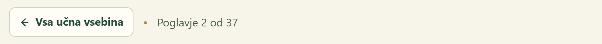
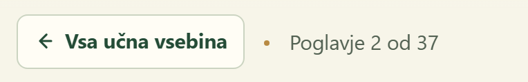
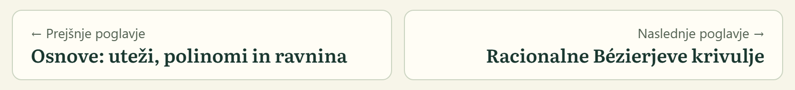
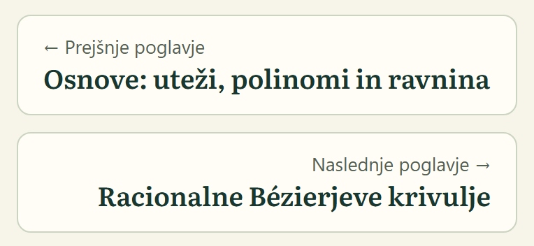
1. Small-caps label, chevron at the card edge, breadcrumb on top
“Previous chapter” becomes the same small-caps line the catalog cards now use, and the arrow becomes one chevron at the outer edge of the card. The return control becomes a breadcrumb like the one on demonstration pages (Učenje / chapter).
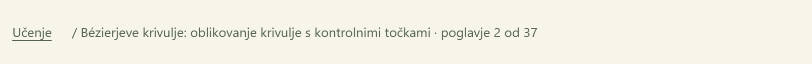
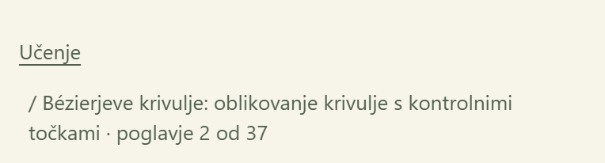
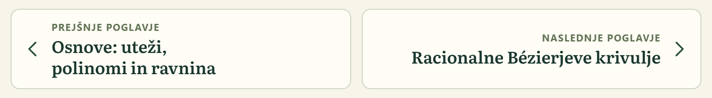
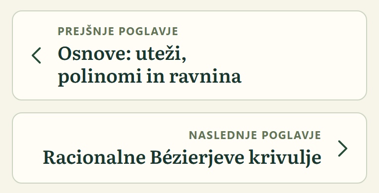
2. Title and chevron only
No “Previous chapter” wording at all: the position of the card and its chevron say it (screen readers still hear the words). The return control is a small-caps text link with the same chevron.
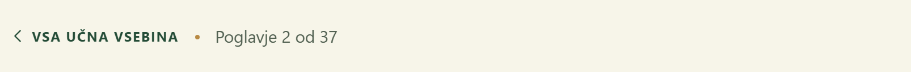
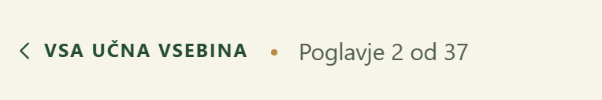
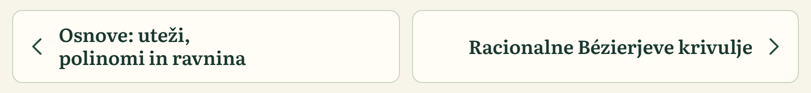
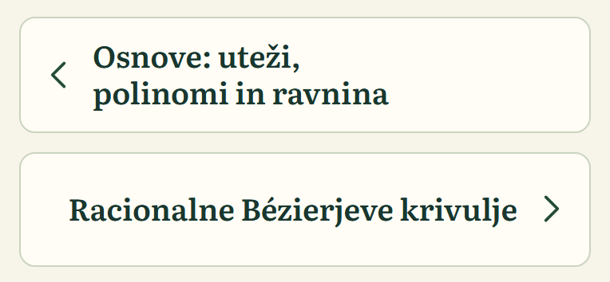
3. Plain links, no boxes
The cards lose their border and fill: a rule above, the small-caps label and the title as a link. The return control is a plain underlined link.
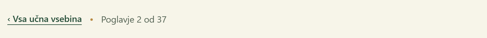
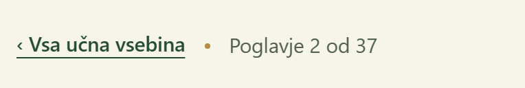
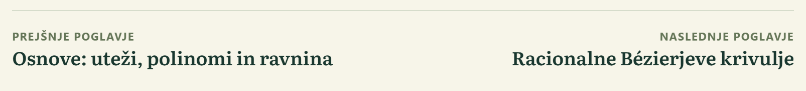
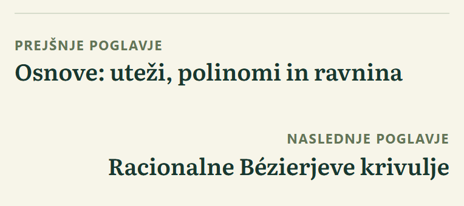
Round 1 (before and after of everything already done) is kept in the repository under docs/reviews/site-walkthrough/polish/evidence/.